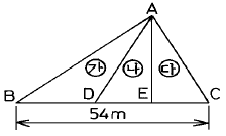
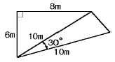
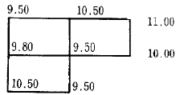
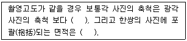
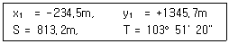
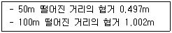
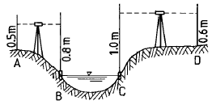
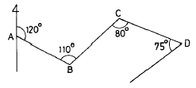

측량및지형공간정보산업기사 (2002-09-08 기출문제)
1과목: 응용측량
1. △ABC에서 ㉮, ㉯, ㉰의 면적의 비를 각각 4:3:2로 분할할 때 EC의 길이는?

- 10.8 m
- 12.0 m
- 16.2 m
- 18.0 m
(정답률: 알수없음)

2. R=100m, L=20m 일때 클로소이드의 파라미터 A의 값은?
- 34.7m
- 44.7m
- 54.7m
- 64.7m
(정답률: 알수없음)
3. 단곡선 설치를 하려고 한다. R=300m, I=60° 일 때 접선장은 얼마인가?
- 170.5m
- 171,9m
- 173.2m
- 174.5m
(정답률: 알수없음)
4. 단곡선 설치에서 노선의 기점에서 곡선을 설치하는 교점까지의 거리가 225.235km 이고, 계산 결과 접선길이가 323m라 하면 이 단곡선의 시단현의 길이는? (단, 중심말뚝 설치간격은 20m임)
- 15 m
- 8 m
- 12 m
- 20 m
(정답률: 알수없음)
5. 지거법에 의한 원곡선 설치방법이 아닌 것은?
- 접선지거법
- 중앙종거법
- 장현지거법
- 편각현장법
(정답률: 알수없음)
6. 하천의 유속측정에서 0.2, 0.6, 0.8의 깊이 에서 지점 유속이 0.560m/sec, 0.485m/sec, 0.400m/sec 였다. 이때 평균 유속은?
- 0.483 m/sec
- 0.461 m/sec
- 0.501 m/sec
- 0.495 m/sec
(정답률: 알수없음)
7. 광산(Tunnel)용 경위의(Transit)의 구비 조건으로서 타당성이 없는 것은 다음 중 어느 것인가?
- 상,하 나사형을 구분지어 어두운 곳에서도 구별하기 쉽게한다.
- 수직 분도원이 전원일 것.
- Transit에 조명장치가 되어 있을 것.
- 수평 분도원은 4분원 분도원일 것.
(정답률: 알수없음)
8. 깊이가 95m, 직경 4m인 수갱에서 갱내외의 연결측량을 하는데 가장 적당한 방법은?
- 트랜싯과 추선에 의한 방법
- 삼각법
- 사변형법
- 정열법
(정답률: 알수없음)
9. 출발점에서 교회점 I.P까지의 거리가 287.56m 이고 곡선반경 R = 390m, 교각 I=38° 26' 40", 현의 길이 20m의 단곡선에서 접선장 T.L은 얼마인가?
- 128.400m
- 135.982m
- 309.603m
- 368.257m
(정답률: 알수없음)
10. 시가지의 곡선설치나 철도, 도로등의 기설곡선의 검사 또는 개정에 편리하게 사용되는 곡선설치법은 다음중 어느 방법인가?
- 접선지거법
- 중앙종거법
- 장현지거법
- 접선편거법
(정답률: 알수없음)
11. 삼각형 세변의 길이가 각각 5m, 7m, 8m 일 때 실제 면적은 얼마인가? (단, 축척은 1:1000 이다.)
- 17.32 m2
- 17.32 km2
- 20 m2
- 20 km2
(정답률: 알수없음)
12. 경관평가를 위한 평가지표와 관계가 없는 것?
- 가시· 불가시
- 식별도
- 위압감
- 촉감
(정답률: 알수없음)
13. 다음 그림과 같은 사각형의 면적은 얼마인가?

- 44m2
- 45m2
- 49m2
- 51m2
(정답률: 알수없음)
14. 어떤 지구에 대한 수준측량결과 다음의 결과값을 얻었다. 이 지구의 계획고를 10.00m로 한다면 이때의 토량은? (단, 직사각형 격자 1개의 면적은 400 m2 이다.)

- 절토량 40 m3
- 성토량 40 m3
- 절토량 260 m3
- 성토량 260 m3
(정답률: 알수없음)
15. 하천측량에서 수위 관측소의 설치장소로서 적합하지 않은 곳은?
- 상하류의 상당한 범위까지 하안(河岸)과 하상(河床)이 안전하고 세굴이나 퇴적되지 않아야 한다.
- 상하류의 길이 약 100m 정도의 직선이어야 하고 유속의 변화가 크지 않아야 한다.
- 지천(支川)의 합류점 및 분류점으로 수위의 변화가 활발한 곳이어야 한다.
- 홍수때는 관측소가 유실, 이동 및 파손될 염려가 없어야 한다.
(정답률: 알수없음)
16. 경관측량에서 개성적 요소에 의한 분류와 관계가 없는 것은?
- 천연경관
- 파노라믹 경관
- 포위된 경관
- 인공경관
(정답률: 알수없음)
17. 원곡선 설치시 반지름이 1,000m의 곡선 중에서 만날 경우에 곡선시점에서 16m 떨어져 있는 점의 종거 y 값은 얼마인가?
- 0.⑤m
- 0.13m
- 0.55m
- 1.00m
(정답률: 알수없음)
18. 전 유속을 받게 되므로 표면부자보다 정확하고 종평균 홍 수 유속 측정때 사용되는 기기는?
- price 유속계
- 이중부자
- 막대부자
- 측추
(정답률: 알수없음)
19. 갱내에서 차량 등에 의하여 파손되지 않도록 콘크리트 등을 이용하여 만든 중심말뚝을 무엇이라 하는가?
- 도벨(dowel)
- 레벨(level)
- 자이로(gyro)
- 도갱(導坑)
(정답률: 77%)
20. 다음 중 터널측량에 관한 설명이 틀린 것은?
- 터널측량을 크게 나누어 갱외측량, 갱내측량, 갱내외 연결측량으로 구분한다.
- 광의의 터널에는 입갱(立坑)과 사갱(斜坑) 또는 지하 발전소나 지하저유소와 같은 인공적 공동(空洞)도 포함된다.
- 터널측량의 순서는 갱내측량, 갱외측량, 갱내외 연결 측량의 순서로 행한다.
- 갱내의 측량에는 기계의 십자선과 표척 등에 조명이 필요하다.
(정답률: 알수없음)
2과목: 사진측량 및 원격탐사
21. 시차차 3.25mm, 촬영고도 3500m, 기선장 100mm의 상태에서 시차측정기를 사용하여 AB 두 지점간의 비고를 측정하였을 경우, 두 지점간의 비고는?
- 107.7m
- 113.8m
- 325m
- 350m
(정답률: 알수없음)
22. 항공사진촬영축척에 의한 분류에서 촬영고도 3000m이상에서 얻어진 사진을 도화하는 것은?
- 일반도화
- 대축척도화
- 중축척도화
- 소축척도화
(정답률: 알수없음)
23. 사진 판독의 요소가 아닌 것은 어느 것인가?
- 크기와 형태
- 음영과 색조
- 질감과 모양
- 날씨와 고도
(정답률: 알수없음)
24. 촬영고도 4500m에서 사진측량을 하였을 때 표고오차는 얼마나 나타나는가?
- 0.90∼1.80m
- 9.0∼18.0m
- 4.5∼9.0m
- 0.45∼0.90m
(정답률: 알수없음)
25. 촬영고도 3,000m, 비고 200m 사진주점에서 투영점까지의 거리가 9.6cm인 지점에서 사진상의 기복 변위량을 구한 값은?
- 4.4mm
- 6.4mm
- 8.4mm
- 10.4mm
(정답률: 알수없음)
26. 화면거리 15cm의 사진기로 비교적 수평하고 평탄한 토지의 면적 47.615km2를 촬영하여 23×23cm의 사진을 얻었다. 비행고도는 몇 m 인가?
- 1,350m
- 1,423m
- 4,500m
- 5,000m
(정답률: 알수없음)
27. 항공사진에서 지질, 토양, 수자원 및 삼림조사 등의 판독작업에 일반적으로 적용되는 사진은?
- 팬크로 사진
- 천연색 사진
- 적외선 사진
- 위색사진
(정답률: 알수없음)
28. 항공사진의 투영법은?
- 중심투영(centeral projection)
- 등적투영(equal area projection)
- 평행투영(parallel projection)
- 정사투영(orthogonal projection)
(정답률: 알수없음)
29. 한쌍의 항공사진을 좌우로 떼어 놓고 실체시 하는 경우 지면의 기복은 다음중 어느 것과 관계가 깊은가?
- 비고감이 커진다.
- 비고감이 적어진다.
- 지형과 동일하다.
- 대체로 바른모양으로 보인다
(정답률: 알수없음)
30. 다음( )안에 들어갈 알맞는 말은? (단, 보통각 사진의 화면거리는 210mm, 광각사진의 화면거리는 150mm 로 한다.)

- 크다, 크다
- 작다, 작다
- 크다, 작다
- 작다, 크다
(정답률: 알수없음)
31. 화면거리 153mm인 카메라로 촬영한 1/50,000축척의 항공사진을 C-계수가 1,200인 도화기로 작업을 할 때의 등고선의 최소 간격은?
- 6.4m
- 12.5m
- 14.5m
- 8.4m
(정답률: 알수없음)
32. 지형도를 제작하기 위한 항공사진의 축척을 결정할때 고려하여야 할 사항이 아닌 것은?
- 항공사진의 크기
- 지형도의 축척
- 소요 정확도
- 사용 도화기의 성능
(정답률: 알수없음)
33. 사진면에 직교되는 광선과 중력선이 이루는 협각을 2등분 하여 사진면에 관통하는 점은?
- 연직점(nadir point)
- 중심점(principal point)
- 등각점(isocenter)
- 부점(floating point)
(정답률: 알수없음)
34. 다음은 도화작업의 진행과정을 표시한 것이다. 맞는 것은 어느것인가?
- 상호표정 - 대지표정 - 평면 및 등고선 그리기 - 원도완성
- 대지표정 - 상호표정 - 평면 및 등고선 그리기 - 원도완성
- 상호표정 - 평면 및 등고선 그리기 - 대지표정 - 원도완성
- 대지표정 - 평면 및 등고선 그리기 - 상호표정 - 원도완성
(정답률: 알수없음)
35. 하천의 1/2500 지형도를 작성코자 항공사진을 제작할 경우 촬영코스로서 적절한 것은?
- 동서방향 코스
- 하신에 일치하는 코스
- 자오선 방향의 코스
- 대체로 하천에 연한 절선상 코스
(정답률: 알수없음)
36. 정확한 기준점 측량이 가능 하다면 1개 모델의 표정에 필요한 기준점의 최소수는?
- 평면기준점 2점, 표고기준점 2점
- 평면기준점 2점, 표고기준점 3점
- 평면기준점 4점, 표고기준점 4점
- 평면기준점 4점, 표고기준점 6점
(정답률: 알수없음)
37. 편위 수정 사진을 써서 시차 측정에 의하여 비고를 구하는 설명중 옳은 것은 어느 것인가?
- 표정할 경우의 기선은 주점 기선을 쓴다.
- 양사진의 주점의 표고가 다른 경우는 기선장을 보정한다.
- 사진의 기울기(ρ ,ω )를 조사하고, 기선장을 보정한다.
- 표정할 경우의 기선은 연직점을 이은선을 쓴다.
(정답률: 알수없음)
38. 화면거리가 153mm인 카메라의 경사가 3g일때 주점과 연직점과의 거리는 다음 중 어느 것인가?
- 7.21mm
- 9.44mm
- 8.49mm
- 10.42mm
(정답률: 알수없음)
39. 중심점과 화면거리를 맞추는 작업은?
- 상호표정
- 내부표정
- 대지표정
- 접속표정
(정답률: 알수없음)
40. 사선법의 중심과 특수 3점과의 관계를 설명한 내용중 옳지 않는 것은?
- 사진의 기울기가 3° 이내의 수직사진에는 사선의 중심으로 주점을 써도 좋다.
- 사진의 기울기가 3° 이상이고 지표면이 평평하면 등각점을 쓴다.
- 사진의 기울기가 3° 이상이고 지표면에 기복이 있으면 연직점을 쓴다.
- 기울기가 3° 이내라도 지표면의 기복이 촬영고도의 10~15% 이상일때는 주점을 쓴다.
(정답률: 알수없음)
3과목: GIS 및 GPS
41. 표준줄자와 비교하여 5cm 긴 30m 줄자로 경사면을 측정한 결과 150m 이었다. 경사 보정량이 1m 일 때 두 지점의 고저차는?
- 15.43 m
- 16.57 m
- 17.33 m
- 19.42 m
(정답률: 알수없음)
42. 다음중 GIS자료를 입력하기 위한 컴퓨터 입력장비가 아닌것은?
- 디지타이저
- 스캐너
- 자동제도기
- 대화식 터미널
(정답률: 알수없음)
43. 기선의 길이 800m를 측정한 지반의 평균표고가 20.6m이다. 이 기선을 평균해면상의 길이로 환산한 보정량은? (단, 지구의 반경은 6370km이다.)
- -0.16cm
- -0.26cm
- -0.36cm
- -0.46cm
(정답률: 알수없음)
44. P1 점의 평면직각좌표(x1, y1)와 좌표(S, T)가 다음과 같을때 P2 의 직각좌표는? (단, x축은 북, y축은 동, T는 x축으로부터 우회로 측정한 각이다.)

- x2 = -194.7m, y2 = 789.5m
- x2 = -39.8m, y2 = 556.2m
- x2 = -274.3m, y2 = 1901.9m
- x2 = -429.2m, y2 = 2135.2m
(정답률: 알수없음)
45. 공간좌표 또는 지리좌표와 관련된 도형 및 속성자료를 효율적으로 수집, 저장, 갱신 분석하기 위한 정보분석체계는?
- 도시 및 지역정보체계
- 지리정보체계
- 지도정보체계
- 측량정보체계
(정답률: 알수없음)
46. 우리나라 국가 수준점간의 등급별 평균거리는 얼마인가?
- 1등 4km, 2등 2km
- 1등 2km, 2등 4km
- 1등 10km, 2등 4km
- 1등 4km, 2등 10km
(정답률: 알수없음)
47. 시거측량에서 트랜싯의 K와 C를 검사하기 위한 측량결과이다. 이때 K와 C의 값은 얼마인가?

- K = 100, C = 0
- K = 99.01, C = 0.79m
- K = 98.24, C = 0.65m
- K = 98.06, C = 0.66m
(정답률: 알수없음)
48. 그림과 같이 넓은 수면을 횡단하여 수준 측량을 하였을 경우 D점의 지반고는? (단, B,C의 측점은 수면과 같으며 A점의 지반고는 10m임)

- 8.4 m
- 9.7 m
- 10.0 m
- 10.1 m
(정답률: 알수없음)
49. 자료기반의 형태에 속하지 않는 것은?
- 평면 구조
- 조직망 구조
- 계층 구조
- 입체 구조
(정답률: 알수없음)
50. 구면삼각형의 면적이 250㎞2 이라면 이 삼각형의 구과량은 얼마인가? (단, 지구의 반경(R)은 6,400Km)
- 1.02″
- 1.25″
- 2.03″
- 4.59″
(정답률: 알수없음)
51. 2차원 좌표에 속하지 않는 것은?
- 2차원 극좌표
- 원· 방사선 좌표
- 쌍곡선 좌표
- 구면좌표
(정답률: 알수없음)
52. 평판측량에서 도상거리 ℓ =10cm인 직선을 이용하여 지상측점(A)에서 측점(B)를 측설하려고 할 때 지상측점(B)에 대응하는 도상위치 b에서의 편심거리가 0.6mm였다. 이때 지상측점 B'에서 발생하는 편심거리는 얼마인가? (단, 도면의 축적은1/500, 기타 오차요인은 없는 것으로 가정)
- 50cm
- 60cm
- 20cm
- 30cm
(정답률: 알수없음)
53. 다음의 개방 traverse 에서 CD의 방위각을 계산하시오.

- 230°
- 150°
- 330°
- 255°
(정답률: 알수없음)
54. 다음의 삼변측량에 관한 설명 중 옳지 않은 것은?
- 삼각점의 위치를 변장측량법을 이용하면 대삼각망의 기선장을 간접측량하기 때문에 기선삼각망의 확대가 필요없다.
- 변장만을 측정하여 삼각망(삼변측량)을 구성할 수 있다.
- 수평각을 대신하여 삼각형의 변장을 직접 관측하여 삼각점의 위치를 정하는 측량이다.
- 삼각망 조정법의 기본원리는 삼각망의 도형이 단 한 개로 확정될 수 있게 기하학적 조건을 만족시키는데는 변함이 없다.
(정답률: 알수없음)
55. 1/50,000 지형도에서 600m등고선과 300m등고선의 사이에 그려지는 주곡선의 수는? (단, 계곡선은 주곡선으로 생각함)
- 29개
- 19개
- 14개
- 11개
(정답률: 알수없음)
56. 50m에 대하여 표준자 길이보다 3.2mm늘어난(伸)강철 tape로 300m를 측정 하였다. 이때 정확한 거리는?
- 299.9808m
- 299.808m
- 300.0192m
- 300.192m
(정답률: 알수없음)
57. GPS측량의 체계구성에 해당하지 않는 것은?
- 사용자부분
- 우주부분
- 제어부분
- 신호부분
(정답률: 알수없음)
58. 다음 삼각망 중에서 조건식의 수가 가장 많으며 정확도가 가장 높은 것은 어느 것인가?
- 사변형망
- 단열삼각망
- 유심다각망
- 육각형망
(정답률: 알수없음)
59. 수평표척을 이용한 간접거리측량시 수평거리(D)의 계산방법은? (여기서, α : 관측된 사이 각, ℓ : 표척길이)
- D=(ℓ/2)sin(α/2)
- D=(ℓ/2)cos(α/2)
- D=(ℓ/2)tan(α/2)
- D=(ℓ/2)cot(α/2)
(정답률: 알수없음)
60. 100m2인 정방형의 토지를 0.1m2까지 정확히 구하기 위하여 요구되는 1변의 길이는 어느 정도까지 정확하게 관측하여야 하는가?
- 4mm
- 5mm
- 10mm
- 12mm
(정답률: 알수없음)
4과목: 측량학
61. 기본측량실시로 인한 손실보상의 협의 대상자는?
- 건설교통부장관과 국립지리원장
- 국립지리원장과 손실을 받은자
- 측량계획기관과 국립지리원장
- 손실을 받은자와 측량계획기관
(정답률: 알수없음)
62. 지형도상에 표시하는 사항중 바다와 연하는 해안수애선 표시는 어느 시기를 기준으로 하는가?
- 간조시의 수애선
- 만조시의 수애선
- 평균 해수면의 수애선
- 측량당시의 수애선
(정답률: 10%)
63. 측량법의 규정에 따라 공공측량 및 일반측량에서 제외되는 측량을 설명한 것으로 틀린 것은?
- 지적법에 의한 지적측량
- 수로업무법에 의한 수로측량
- 국지적 측량으로서 건설교통부장관이 정하여 고시하는 측량
- 도시계획 측량
(정답률: 알수없음)
64. 공공측량으로 지정할 수 있는 일반측량에 관한 설명 중 옳은 것은?
- 측량노선의 길이가 5km 이상인 수준측량
- 측량실시 지역의 면적이 500m2 이상인 삼각측량
- 촬영지역의 면적이 1km2 이상인 측량용 사진의 촬영
- 측량노선의 길이가 1km 이상인 다각측량
(정답률: 알수없음)
65. 기본측량을 실시함에 있어서 타인의 토지를 일시 사용할 수 있는 경우는?
- 임시설치 표지를 설치하기 위하여 필요할 때
- 영구표지를 설치하기 위하여 필요할 때
- 일시표지를 설치하기 위하여 필요할 때
- 토지의 소유자 또는 점유자를 알수 있을 때
(정답률: 알수없음)
66. 기본측량에 관한 설명 중 가장 옳은 것은?
- 기본측량은 국가기관에서 시행하는 것이다.
- 기본측량은 국가기관 또는 공공단체에서 시행하는 것이다.
- 기본측량은 개인이 시행할 수도 있다.
- 기본측량은 국립지리원만이 시행하는 것이다.
(정답률: 알수없음)
67. 국립지리원이 발행하는 지도의 축척이 아닌 것은?
- 1/25,000
- 1/2,500
- 1/1,500
- 1/1,000
(정답률: 알수없음)
68. 기본측량에 관한 장기 계획은 누가 수립하는가?
- 건설교통부장관
- 국립지리원장
- 서울특별시장, 광역시장, 도지사
- 시장, 군수
(정답률: 알수없음)
69. 다음 중 1:50,000 지형도의 도곽 구성으로 옳은 것은?
- 경도차 15', 위도차 15'
- 경도차 7' 30", 위도차 7' 30"
- 경도차 1' 30", 위도차 1' 30"
- 경도차 1° 45', 위도차 15°
(정답률: 알수없음)
70. 우리나라 수준원점의 소재지는?
- 서울
- 인천
- 수원
- 부산
(정답률: 알수없음)
71. 측량기술자가 측량협회의 회원이 되는 시점은?
- 측량업에 종사후 1년후 부터
- 측량기술자의 자유의사에 의해
- 국가기술자격을 받은 날로 부터
- 협회의 정관이 정하는 바에 의하여
(정답률: 알수없음)
72. 과태료 처분에 불복이 있는자는 그 처분이 있음을 안 날로부터 며칠이내에 이의를 제기할 수 있는가? (단, 측량법에 의한다.)
- 15일
- 20일
- 25일
- 30일
(정답률: 알수없음)
73. 1:5,000지형도 도식적용규정 상에서 도로의 실폭을 축척화 하여 표현할 수 있는 도로의 폭원을 규정하고 있다. 맞는 것은?
- 2.5m 이상
- 3.0m 이상
- 3.5m 이상
- 4.0m 이상
(정답률: 알수없음)
74. 지도의 외도곽에 표시하는 사항이 아닌 것은?
- 도엽명
- 범례
- 축척
- 좌표
(정답률: 알수없음)
75. 기본측량의 성과를 사용하여 지도를 간행하고자 하는 경우 지도에 명시할 사항이 아닌 것은?
- 측량기술자 명단
- 사용한 측량성과의 정확도
- 사용한 측량 성과
- 측량 기록의 종류
(정답률: 알수없음)
76. 공공측량의 기준에 대한 설명으로 옳은 것은?
- 일반측량의 측량성과를 기초로하여 실시한다.
- 기본측량 또는 다른 공공측량의 측량성과를 기초로 하여 실시한다.
- 기본측량의 측량성과만을 기초로 하여 실시한다.
- 일반측량, 기본측량 또는 다른 공공측량의 측량성과를 기초로하여 실시한다.
(정답률: 알수없음)
77. 토지 수용법상에서의 기업자(起業者)라 함은 다음 중 누구를 말하는가?
- 토지에 있는 물건에 관하여 소유권 기타의 권리를 가진 자
- 수용 또는 사용할 토지의 소유자
- 토지에 관한 소유권 이외의 권리를 가진 자
- 토지의 수용 또는 사용을 필요로 하는 공익사업을 행하는 자
(정답률: 알수없음)
78. 측량업자는 당해 측량용역기간중 대통령령이 정하는 바에 의하여 측량기술자를 용역현장에 배치하여야 하는데 이때 공공측량용역의 경우 배치기준으로 옳은 것은?
- 고급기술자 1인이상
- 중급기술자 1인이상
- 특급기술자 1인이상
- 초급기술자 1인이상
(정답률: 알수없음)
79. 측량협회의 설립목적으로 틀린 것은?
- 측량기술자 및 측량업자의 품위보전
- 측량업의 관리
- 측량에 관한 기술의 향상에 기여
- 측량제도의 건전한 발전에 기여
(정답률: 알수없음)
80. 토지 수용 위원회의 재결 사항이 아닌 것은?
- 수용 또는 사용할 토지의 구역 및 사용방법
- 손해 배상에 대한 처벌
- 수용 또는 사용 시기와 기간
- 손실의 보상
(정답률: 알수없음)
또한, △AEC와 △BEC의 면적의 합은 △ABC의 면적과 같으므로,
△AEC의 면적 + △BEC의 면적 = S
따라서, △AEC의 면적은 4S/9 + 3S/9 = 7S/9이고, △BEC의 면적은 2S/9이다.
이제 △AEC와 △BEC의 면적의 비를 구해보면,
△AEC의 면적 : △BEC의 면적 = (7S/9) : (2S/9) = 7 : 2
따라서, EC를 9로 놓고 계산하면, AE는 7, BE는 2가 된다.
또한, △AEC와 △BEC의 높이는 모두 AC와 평행하므로,
EC의 길이는 (7/9) × AC - (2/9) × AC = (5/9) × AC이다.
AC의 길이는 18이므로, EC의 길이는 (5/9) × 18 = 10이다.
따라서, 정답인 "12.0 m"은 아니다.
하지만, 문제에서는 소수점 첫째자리까지만 답을 구하도록 되어 있으므로,
EC의 길이는 10.8이다.
따라서, 정답은 "10.8 m"이다.